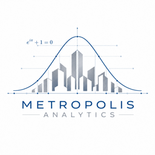
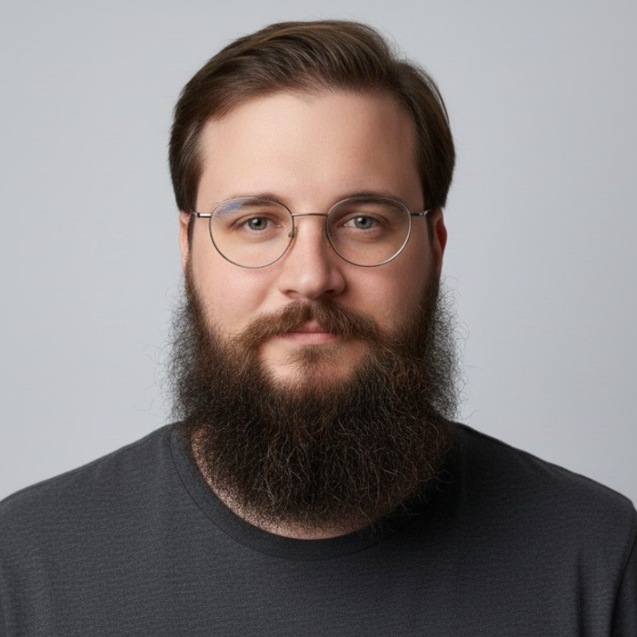
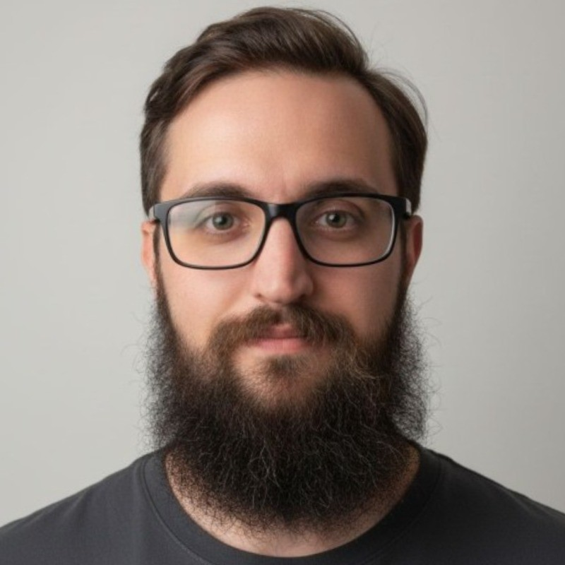

Mestrado e doutorado
Você precisa defender escolhas metodológicas diante de uma banca e traduzir a análise em um capítulo que se sustente. O prazo é real e a orientação nem sempre alcança a parte estatística.

Metropolis AnalyticsAssessoria metodológica e estatística
Da definição da pergunta à interpretação dos resultados, acompanhamos cada decisão do seu estudo — com análise reprodutível, relatório claro e conversas que fazem você entender o próprio dado.
A conversa começa no WhatsApp, sem compromisso e sem necessidade de enviar arquivos no primeiro contato.
Os contextos mudam, mas a dificuldade é a mesma: existe um dado, existe uma pergunta e falta a ponte metodológica entre os dois.
Você precisa defender escolhas metodológicas diante de uma banca e traduzir a análise em um capítulo que se sustente. O prazo é real e a orientação nem sempre alcança a parte estatística.
Há dados assistenciais acumulados e perguntas clínicas legítimas, mas falta quem estruture o banco, escolha o método adequado e transforme isso em evidência apresentável.
Você tem uma base própria e quer mais do que um painel descritivo — quer saber se o efeito observado se sustenta, com o rigor que uma decisão de negócio exige.
Nenhum desses pontos é falta de esforço. São etapas que exigem um tipo específico de experiência.
Você não precisa chegar com o método definido. Entramos no ponto em que a pesquisa está e seguimos até onde fizer sentido.
Estamos junto nas decisões, não apenas na entrega. Cada escolha de desenho, variável ou método é discutida, justificada e registrada — para que você saiba defender o que foi feito, e não apenas reproduzi-lo.
Organizamos o banco antes de qualquer análise: inconsistências, valores ausentes, duplicidades, categorias e formatos. Essa etapa é documentada, porque é ela que determina se o resultado é confiável.
Você recebe tabelas, figuras e um relatório com o passo a passo da análise. Reprodutível significa que qualquer pessoa — sua banca, um revisor, um colega — pode conferir como se chegou a cada número.
Escrevemos o texto técnico que conecta resultado e significado: o que o dado mostra, o que ele não mostra e quais limites precisam ser declarados. Material pronto para entrar em dissertação, tese, manuscrito ou apresentação.
O que nos diferencia
Toda entrega vem acompanhada de conversa. Reunimos para percorrer a análise junto com você até que a explicação seja sua, e não nossa. É a diferença entre receber um resultado e conseguir sustentá-lo em uma arguição.
Você sabe o que será feito, por quê e o que receberá ao final — antes de começar.
Você apresenta o estágio da pesquisa, a principal dúvida e o que já foi definido ou coletado. Sem custo e sem compromisso.
Avaliamos o material e propomos o que faz sentido: as etapas, as entregas, os prazos e os pontos de revisão. Você aprova antes de começar.
O trabalho avança com contato aberto. As decisões são comunicadas conforme acontecem — você não recebe surpresas no final.
Você recebe o material acordado e passamos por ele em reunião, com espaço para ajustes e para as dúvidas que aparecem depois.
O acompanhamento funciona à distância com a mesma qualidade — reuniões por vídeo, material compartilhado e contato direto ao longo do processo. Encontros presenciais são possíveis na região de São Paulo, quando a etapa justificar. A escolha é sua e pode mudar durante o projeto.
O contato é direto com quem executa. Não há camada de intermediação entre você e a análise.

Pesquisa, epidemiologia e modelagem
Doutor em Fisioterapia, pesquisador e autor ou coautor de publicações em epidemiologia, modelagem e ciência de dados em saúde.

Ciência de dados e análise estatística
Mestre em Ciências da Saúde e cientista de dados, com experiência em análise epidemiológica e modelagem estatística.
Respostas diretas para saber se a assessoria faz sentido para a sua pesquisa.
Em qualquer um. O contato antes da coleta amplia as opções metodológicas e evita retrabalho, mas pesquisas em andamento — ou já finalizadas e com pedido de correção — também são avaliadas.
A experiência da equipe é concentrada em pesquisa quantitativa em saúde, e é aí que entregamos mais. Também atendemos empresas e projetos de outras áreas quando a pergunta é quantitativa e os dados permitem. Não trabalhamos com análise qualitativa.
Estudos observacionais, ensaios clínicos, estudos diagnósticos, validação de instrumentos, revisões sistemáticas com metanálise e avaliações econômicas.
Depende do escopo acordado. Pode incluir plano de análise, banco tratado e documentado, relatório reprodutível, tabelas e figuras prontas para publicação e o texto técnico de métodos e resultados. Definimos isso juntos antes de começar.
Sim. Dados, documentos e informações de projeto são tratados com confidencialidade. Antes de qualquer compartilhamento, alinhamos o que é necessário enviar, quem terá acesso e por qual canal.
Não. O trabalho é seu. Atuamos como apoio metodológico e estatístico — a condução, as decisões finais e a autoria permanecem com você e sua orientação.
Varia com o estágio do estudo, o estado do banco e a complexidade da análise. O prazo é estimado no diagnóstico inicial, antes de qualquer compromisso.
Próximo passo
Uma conversa inicial costuma ser suficiente para saber se conseguimos ajudar e o que faria sentido no seu caso.
Abrir conversa no WhatsApp (abre em nova aba)Nenhuma mensagem é enviada automaticamente. Você revisa antes de mandar.